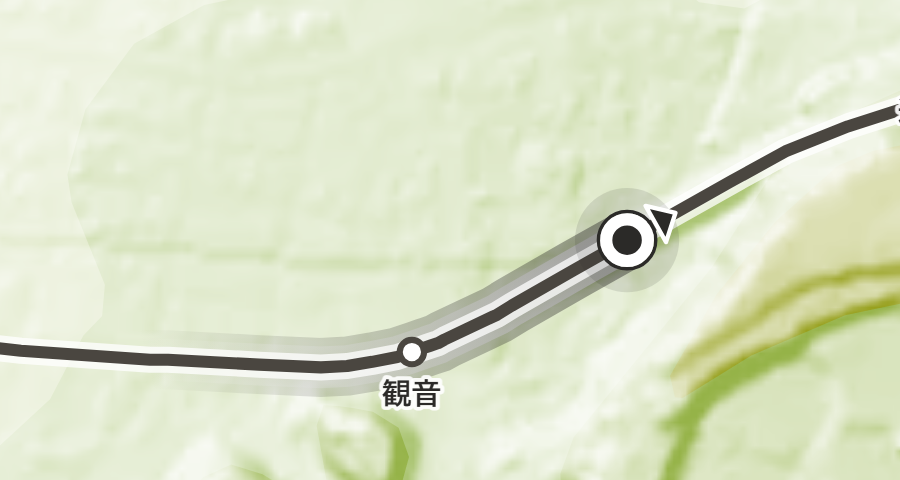
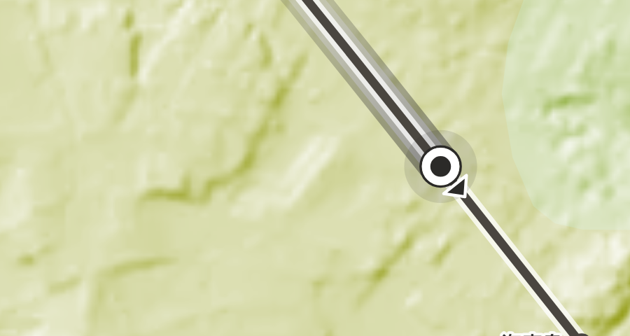
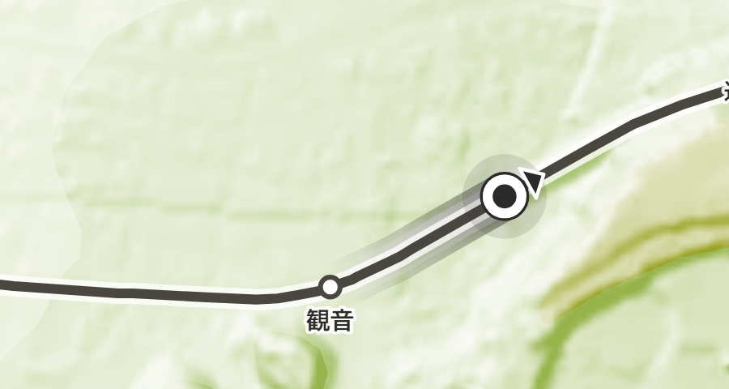
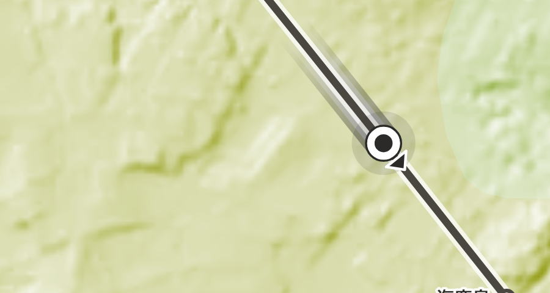
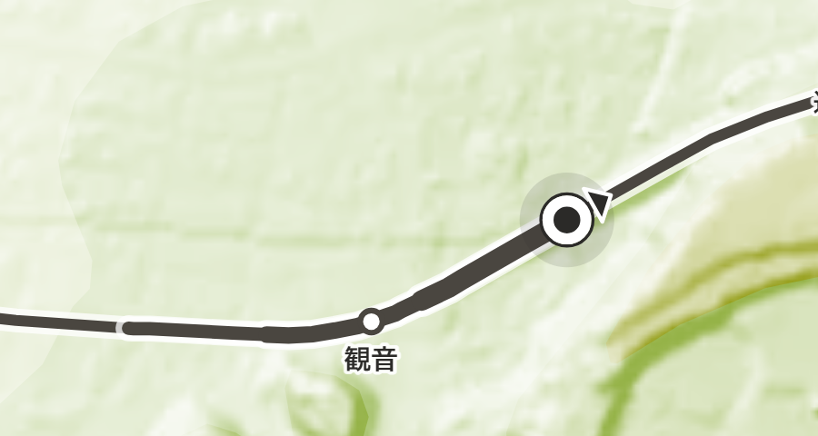
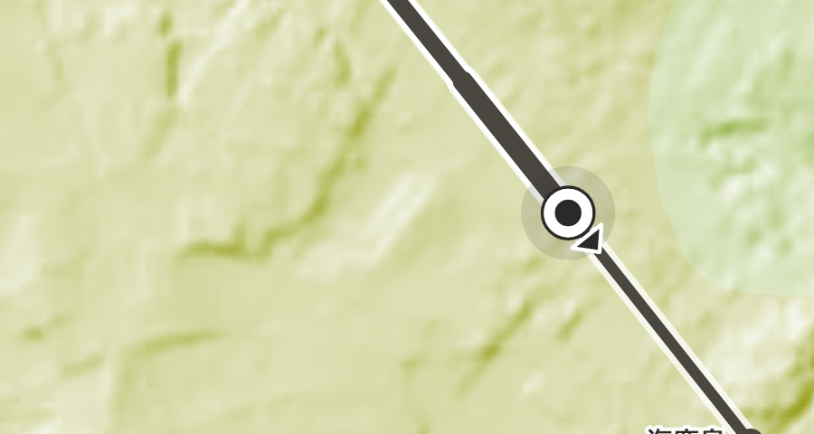
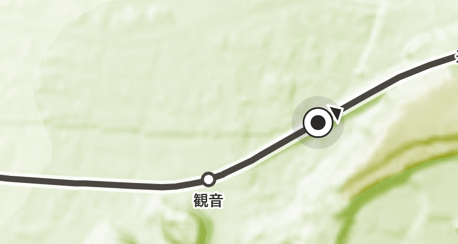
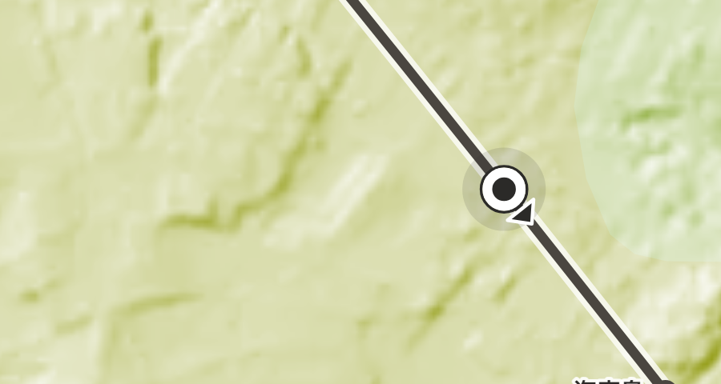

すべて本物の index.html を偽の GPS で走らせて撮ったもの。銚子電鉄の下り、
左が淡い地形（観音のあたり・低地）、右が濃い地形（笠上黒生〜西海鹿島・台地）。
mockup は 1:1 だが実機の地図は --k = 0.25 で、同じものが 4 分の 1 の大きさになる。判断は必ずこちらで行う。
尾（K）を足した理由は「矢印が消える場面で、止まっていても進行方向が伝わる」だった。 ところが実装の結果はこうなっている。
| 状態 | 矢印 | 尾 |
|---|---|---|
| 車上モード（走行中・停車中） | 出る | 出る |
乗車前・降車後（.here--still） | 出ない | 出ない |
線路から離れている（.here--off） | 出ない | 出ない |
尾が出る場面では、矢印も必ず出ている。矢印が消える場面（尾が埋めるはずだった穴）では、尾も一緒に消えている。 つまり尾は、矢印が既に言っていることを二度言っているだけになっている。 残る取り柄は「遠くから線をたどって現在地に着ける」ことだが、それは変体A（長い尾）の取り柄で、変体B は短くすることで捨てたもの。
線路の下に、墨 34px と白 24px の帯を敷く。線路そのものの色・太さには触らない。


「長くて気持ち悪い」を、作りは変えずに長さだけで直したもの。




比べるための下敷き。これで足りているかどうかが、そもそもの判断。


| 案 | 淡い地形 | 濃い地形 | 見え方 |
|---|---|---|---|
| 案2・400m | 見える | 見える | 両方で読めるが、ぼけた二重線・刷りずれのように見える。線路が汚れて見える |
| 案2・180m | 見える | 見える | 圧はかなり減る。ただし「動きのぶれ」に見え、意図した印には見えない |
| 案1・400m | 弱い | 弱い | 汚れないが、尾なしとの差がほとんど無い |
| 尾なし | ─ | ─ | いちばん清潔。芯と矢印だけで現在地も進行方向も足りている |
尾を残すなら案2の180mだが、上の「尾は何のためにあったのか」を踏まえると、いちばん筋が通るのは尾を落とすことだと考える。 「遠くから線をたどる」を本当に要るとするなら、それは変体A（長い尾）を選び直す話であって、変体B に短い尾を足す話ではない。